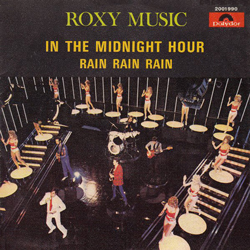
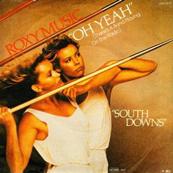
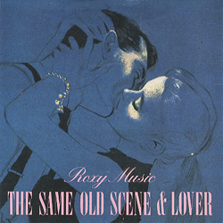
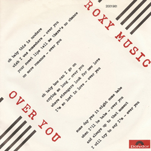
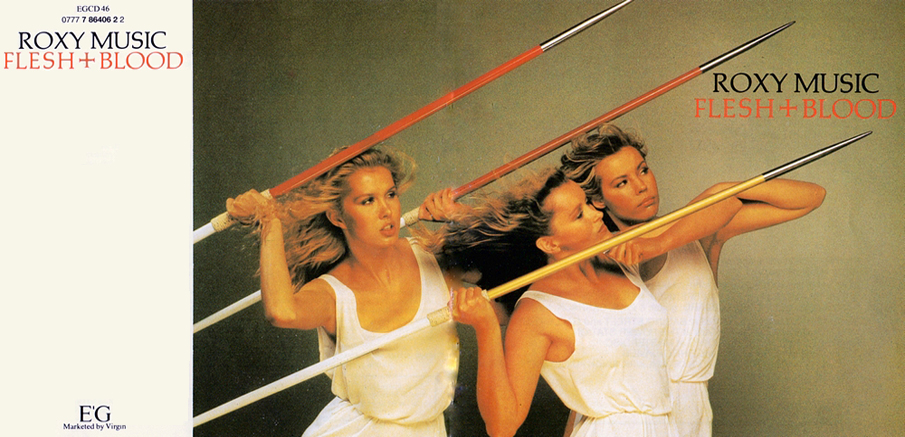

I'm gonna wait till the midnight hour That's when my love comes tumbling down I'm gonna wait till the midnight hour When there's no one else around I'm gonna take you girl and hold you And do all the things I told you In the midnight hour - Yes I am - I'm gonna wait till the stars come out And see that twinkle in your eye I'm gonna wait till the midnight hour That's when my love begins to shine You're the only girl I know That really loves me so In the midnight hour The midnight hour I'm gonna wait till the midnight hour That's when my love comes tumbling down I'm gonna wait till the midnight hour When my love begins to shine Just you and I In the midnight hour
OH YEAH

Some expression in your eyes Overtook me by surprise Where was I How was I to know? How can we drive to a movie show When the music is here in my car? There's a band playing on the radio With a rhythm of rhyming guitars They're playing "Oh Yeah" on the radio And so it came to be our song And so on through all summer long Day and night drifting into love Driving you home from a movie show So in tune to the sounds in my car There's a band playing on the radio With a rhythm of rhyming guitars They're playing "Oh Yeah" on the radio It's some time since we said goodbye And now we lead our separate lives But where am I, where can I go? Driving alone to a movie show So I turn to the sounds in my car There's a band playing on the radio With a rhythm of rhyming guitars There's a band playing on the radio And it's drowning the sound of my tears They're playing "Oh Yeah" on the radio


